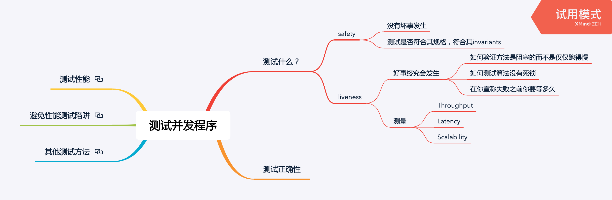
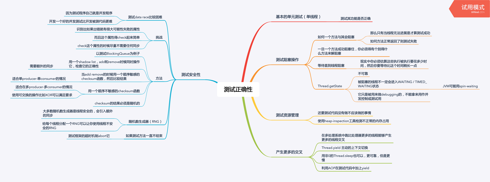
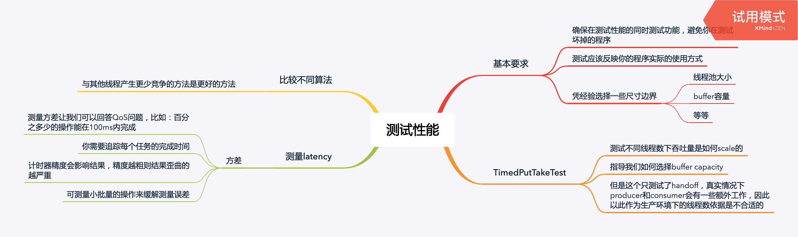
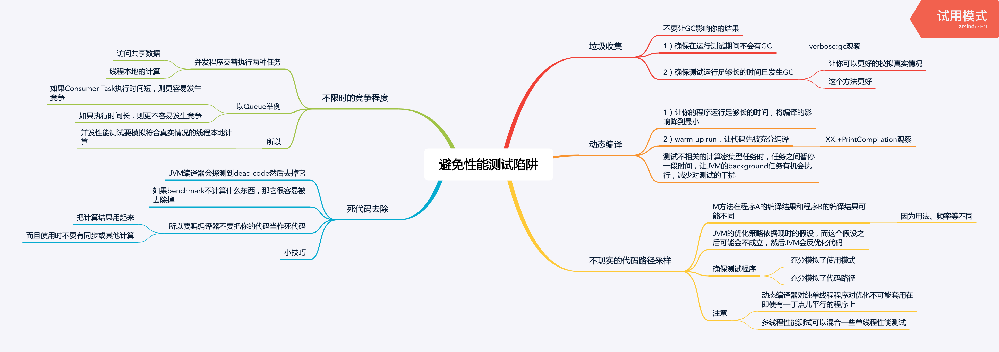
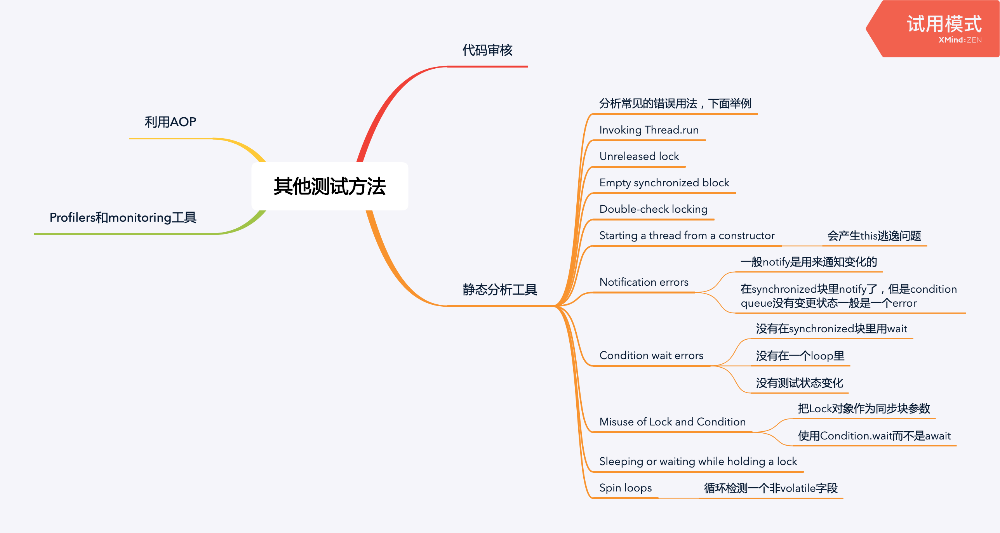

测试正确性

测试阻塞方法
void testTakeBlocksWhenEmpty() {
final BoundedBuffer<Integer> bb = new BoundedBuffer<>(10);
Thread taker = new Thread() {
public void run() {
try {
int unused = bb.take();
fail(); // if we get here, it's an error
} catch (InterruptedException success) {}
}
try {
take.start();
Thread.sleep(LOCKUP_DETECT_TIMEOUT);
taker.interrupt();
taker.join(LOCKUP_DETECT_TIMEOUT);
assertFalse(taker.isAlive());
} catch (Exception unexpected) {
fail();
}
}
}测试安全性
一种简易的中等质量的随机数生成器：
// 用hashcode / nanoTime 作为种子可以得到中等质量的随机数
static int xorShift(int y) {
y ^= (y << 6);
y ^= (y >>> 21);
y ^= (y << 7);
return y;
}下面是测试线程安全的代码：
public class PutTakeTest extends TestCase {
protected static final ExecutorService pool = Executors.newCachedThreadPool();
protected CyclicBarrier barrier;
protected final SemaphoreBoundedBuffer<Integer> bb;
protected final int nTrials, nPairs;
protected final AtomicInteger putSum = new AtomicInteger(0);
protected final AtomicInteger takeSum = new AtomicInteger(0);
public static void main(String[] args) throws Exception {
new PutTakeTest(10, 10, 100000).test(); // sample parameters
pool.shutdown();
}
public PutTakeTest(int capacity, int npairs, int ntrials) {
this.bb = new SemaphoreBoundedBuffer<Integer>(capacity);
this.nTrials = ntrials;
this.nPairs = npairs;
// n个producer + n个consumer + 1个main thread
this.barrier = new CyclicBarrier(npairs * 2 + 1); main thread
}
void test() {
try {
for (int i = 0; i < nPairs; i++) {
pool.execute(new Producer());
pool.execute(new Consumer());
}
barrier.await(); // wait for all threads to be ready
barrier.await(); // wait for all threads to finish
assertEquals(putSum.get(), takeSum.get());
} catch (Exception e) {
throw new RuntimeException(e);
}
}
static int xorShift(int y) {
y ^= (y << 6);
y ^= (y >>> 21);
y ^= (y << 7);
return y;
}
class Producer implements Runnable {
public void run() {
try {
int seed = (this.hashCode() ^ (int) System.nanoTime());
int sum = 0;
barrier.await();
for (int i = nTrials; i > 0; --i) {
bb.put(seed);
sum += seed;
seed = xorShift(seed);
}
// 在最后汇总sum可以减少snc
putSum.getAndAdd(sum);
barrier.await();
} catch (Exception e) {
throw new RuntimeException(e);
}
}
}
class Consumer implements Runnable {
public void run() {
try {
barrier.await();
int sum = 0;
for (int i = nTrials; i > 0; --i) {
sum += bb.take();
}
takeSum.getAndAdd(sum);
barrier.await();
} catch (Exception e) {
throw new RuntimeException(e);
}
}
}
}被测代码：
@ThreadSafe
public class SemaphoreBoundedBuffer <E> {
private final Semaphore availableItems, availableSpaces;
@GuardedBy("this") private final E[] items;
@GuardedBy("this") private int putPosition = 0, takePosition = 0;
public SemaphoreBoundedBuffer(int capacity) {
if (capacity <= 0)
throw new IllegalArgumentException();
availableItems = new Semaphore(0);
availableSpaces = new Semaphore(capacity);
items = (E[]) new Object[capacity];
}
public boolean isEmpty() {
return availableItems.availablePermits() == 0;
}
public boolean isFull() {
return availableSpaces.availablePermits() == 0;
}
public void put(E x) throws InterruptedException {
availableSpaces.acquire();
doInsert(x);
availableItems.release();
}
public E take() throws InterruptedException {
availableItems.acquire();
E item = doExtract();
availableSpaces.release();
return item;
}
// 这里的synchronized很重要，如果没有就线程不安全了
private synchronized void doInsert(E x) {
int i = putPosition;
items[i] = x;
putPosition = (++i == items.length) ? 0 : i;
}
// 这里的synchronized很重要，如果没有就线程不安全了
private synchronized E doExtract() {
int i = takePosition;
E x = items[i];
items[i] = null;
takePosition = (++i == items.length) ? 0 : i;
return x;
}
}测试资源管理
测试SemaphoreBoundedBuffer是否正确释放了空间：
class Big {
double[] data = new double[100000];
}
void testLeak() throws InterruptedException {
SemaphoreBoundedBuffer<Big> bb = new SemaphoreBoundedBuffer<Big>(CAPACITY);
int heapSize1 = snapshotHeap();
for (int i = 0; i < CAPACITY; i++)
bb.put(new Big());
for (int i = 0; i < CAPACITY; i++)
bb.take();
int heapSize2 = snapshotHeap();
assertTrue(Math.abs(heapSize1 - heapSize2) < THRESHOLD);
}
private int snapshotHeap() {
/* Snapshot heap and return heap size */
return 0;
}测试线程池扩展策略：
public class TestThreadPool extends TestCase {
private final TestingThreadFactory threadFactory = new TestingThreadFactory();
public void testPoolExpansion() throws InterruptedException {
int MAX_SIZE = 10;
// newFixedThreadPool 最多创建10个线程
ExecutorService exec = Executors.newFixedThreadPool(MAX_SIZE);
for (int i = 0; i < 10 * MAX_SIZE; i++)
exec.execute(new Runnable() {
public void run() {
try {
Thread.sleep(Long.MAX_VALUE);
} catch (InterruptedException e) {
Thread.currentThread().interrupt();
}
}
});
// 等待确保创建了至少10个线程
for (int i = 0;
i < 20 && threadFactory.numCreated.get() < MAX_SIZE;
i++)
Thread.sleep(100);
assertEquals(threadFactory.numCreated.get(), MAX_SIZE);
exec.shutdownNow();
}
}
class TestingThreadFactory implements ThreadFactory {
public final AtomicInteger numCreated = new AtomicInteger();
private final ThreadFactory factory = Executors.defaultThreadFactory();
public Thread newThread(Runnable r) {
numCreated.incrementAndGet();
return factory.newThread(r);
}
}测试性能

Barrier-based timer
利用Barrier的callback来做计时：
this.timer = new Barrierimer();
this.barrier = new CyclicBarrier(nparis * 2 + 1, timer);
// 会在Barrier放行的时候执行
public class BarrierTimer implements Runnable {
private boolean started;
private long startTime, endTime;
public synchronized void run() {
long t = System.nanoTime();
if (!started) {
started = true;
startTime = t;
} else
endTime = t;
}
public synchronized void clear() {
started = false;
}
public synchronized long getTime() {
return endTime - startTime;
}
}利用BarrierTimer测试【不同线程数，不同Buffer capacity】的吞吐量：
public class TimedPutTakeTest extends PutTakeTest {
private BarrierTimer timer = new BarrierTimer();
public TimedPutTakeTest(int cap, int pairs, int trials) {
super(cap, pairs, trials);
barrier = new CyclicBarrier(nPairs * 2 + 1, timer);
}
public void test() {
try {
timer.clear();
for (int i = 0; i < nPairs; i++) {
pool.execute(new PutTakeTest.Producer());
pool.execute(new PutTakeTest.Consumer());
}
barrier.await();
barrier.await();
long nsPerItem = timer.getTime() / (nPairs * (long) nTrials);
System.out.print("Throughput: " + nsPerItem + " ns/item");
assertEquals(putSum.get(), takeSum.get());
} catch (Exception e) {
throw new RuntimeException(e);
}
}
public static void main(String[] args) throws Exception {
int tpt = 100000; // trials per thread
for (int cap = 1; cap <= 1000; cap *= 10) {
System.out.println("Capacity: " + cap);
for (int pairs = 1; pairs <= 128; pairs *= 2) {
TimedPutTakeTest t = new TimedPutTakeTest(cap, pairs, tpt);
System.out.print("Pairs: " + pairs + "\t");
t.test();
System.out.print("\t");
Thread.sleep(1000);
t.test();
System.out.println();
Thread.sleep(1000);
}
}
PutTakeTest.pool.shutdown();
}
}避免性能测试陷阱

去除死代码
一个避免被编译器当作是死代码的技巧：
if (foo.x.hashCode() == System.nanoTime()) {
System.out.print(" ");
}其他测试方法
